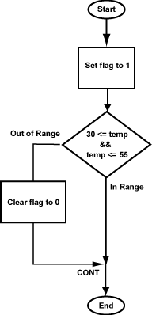

The completed program follows.
Here
is the complete program,
suitable to copy to a file and to run with SPIM.
When you run it, set the PC to 0x400000 (as usual)
and also use the set value menu to set $2 to
a temperature.
Run the program with different temperatures
and check that $3 is set correctly.
## tempRange.asm
##
## Check that 30 <= temp <= 55
## Set flag to 1 if in range, to 0 if out of range
##
## Registers:
## $2 --- temperature
## $3 --- in/out range indicator flag
## $8 --- scratch

.text
.globl main
# Set range indicator to 1
main: ori $3,$0,1 # set to 1
# Test 30 <= temp <= 55
sltiu $8,$2,56 # $8=1 if temp <= 55
beq $8,$0,out # 0? out of range
sll $0,$0,0 # delay
sltiu $8,$2,30 # $8=1 if temp < 30
beq $8,$0,cont # 0? in range
sll $0,$0,0 # delay
# Out of Range: clear range indicator to 0
out: ori $3,$0,0 # clear flag to 0
cont: sll $0,$0,0 # target for the jump
Could the no-op instructions
( the sll)
be removed without affecting the program?